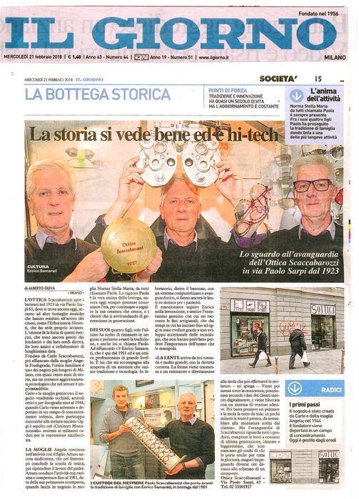
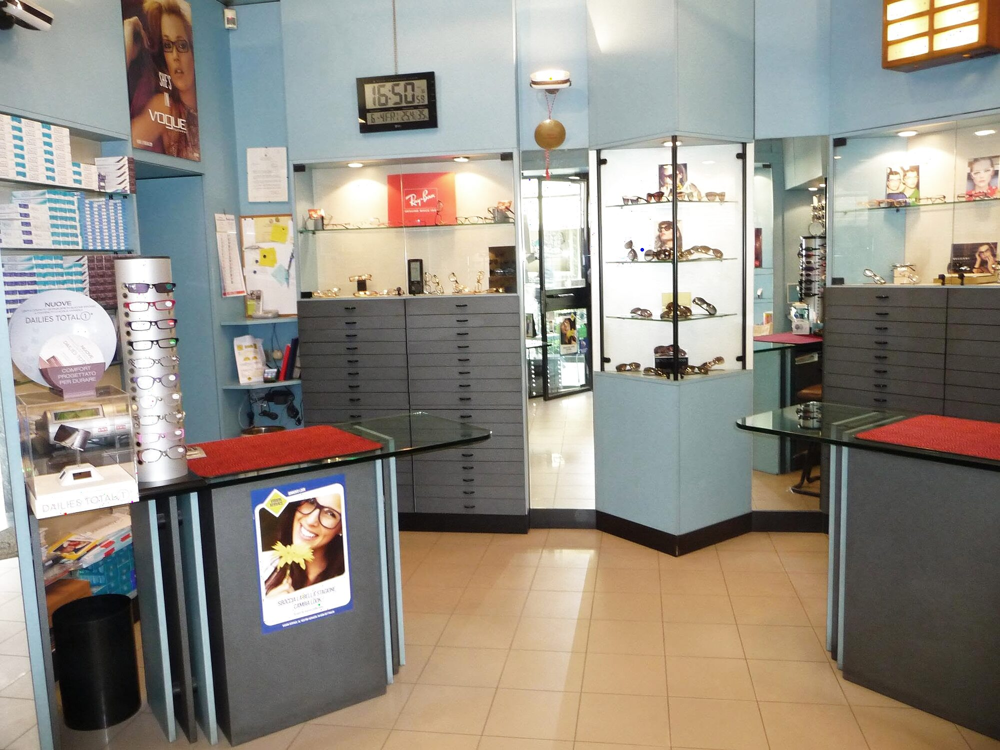
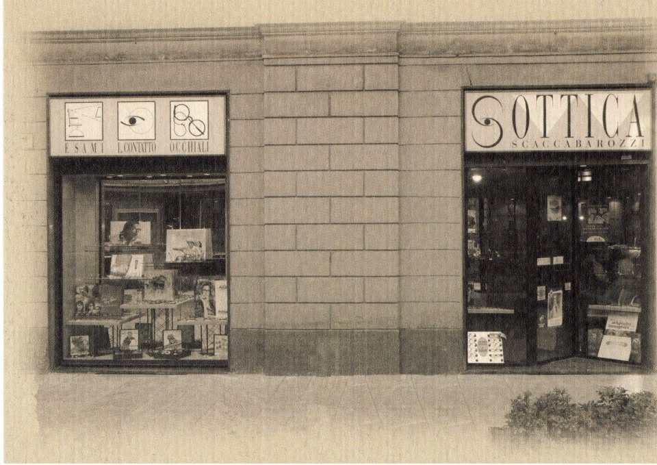
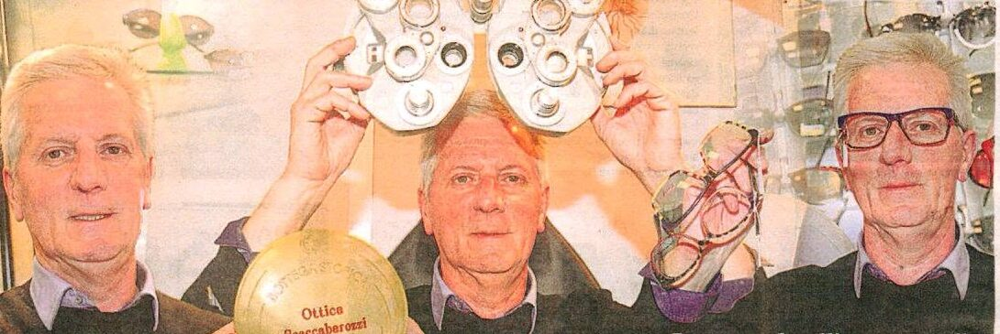
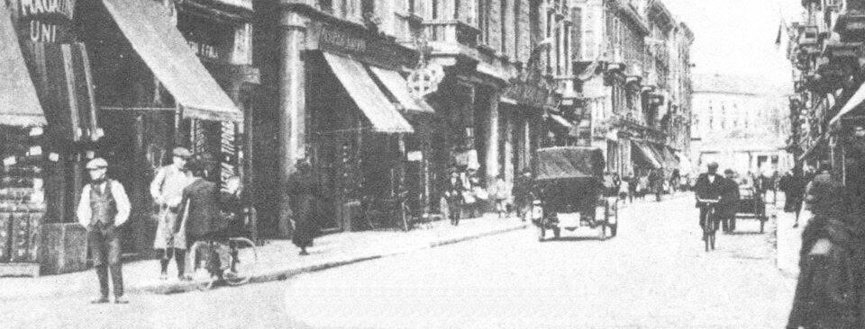
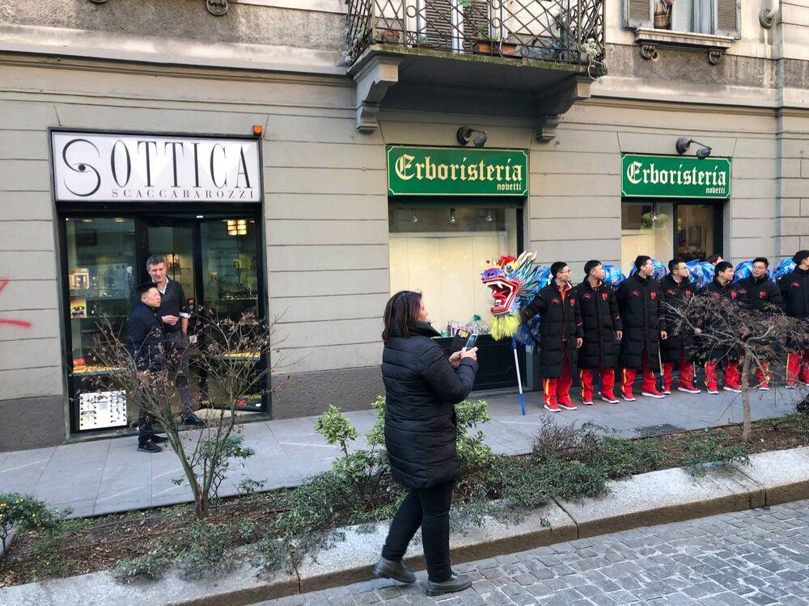

Il Giorno · 21 febbraio 2018
«La storia si vede bene ed è hi-tech»
La rubrica La bottega storica racconta quasi un secolo di Ottica Scaccabarozzi: «tradizione e innovazione, ma l'aggiornamento è costante».

Bottega storica a conduzione familiare: esame della vista, lenti lavorate nel nostro laboratorio e montature scelte con calma, una persona alla volta.
La bottega storica
Le vetrine di via Paolo Sarpi 63 si sono accese per la prima volta nel 1923. Da allora l'Ottica Scaccabarozzi è rimasta qui, accanto alle altre botteghe storiche della via, passando di mano in mano dentro la stessa famiglia.
Il quartiere è cambiato, la tecnologia ancora di più. Quello che non è cambiato è il modo di stare al banco: ascoltare, misurare, consigliare con onestà.

Carlo Scaccabarozzi e la moglie Angela Fradegrada aprono la bottega in via Paolo Sarpi 63: occhiali, articoli ottici e fotografia.
Carlo viene arrestato e deportato in un campo di concentramento tedesco, dove muore. Oggi riposa al Cimitero Monumentale insieme ai milanesi caduti per la repressione nazifascista.
Angela tiene aperta la bottega con il figlio Arturo, che ha appena undici anni. Arturo completa la scuola di ottica e la guida con carisma e competenza fino al 1981.
Alla scomparsa prematura di Arturo, la bottega passa alla moglie Norma Stella Maria, per tutti la signora Paola. Nello stesso anno entra Enrico Samarati, ottico di grande esperienza.
Dei quattro figli, è Paolo Scaccabarozzi a portare avanti la tradizione di famiglia, con Enrico al suo fianco. Una delle attività più longeve di Milano.
Tradizione e innovazione
Nel laboratorio interno le lenti vengono ancora fatte su misura per ogni persona, con un sistema computerizzato di ultima generazione. Le fasi artigianali sono le stesse di sempre: è la precisione a essere cambiata.

Arriva rotonda e molto grande, già con la diottria corretta.
La sagoma della montatura scelta viene trasmessa al centratore e da lì direttamente alla mola.
La lente viene posizionata secondo i tuoi dati, inseriti digitalmente, e bloccata con ventose adesive.
In pochi minuti la lente è pronta da montare: la cura sta tutta nelle mani di chi la manipola.
In bottega
Per trovare il giusto equilibrio tra le tue esigenze visive e le lenti più adatte.
Un buon assortimento di montature, con lenti montate qui, nel laboratorio interno.
Di ultima generazione, idratate e leggerissime: non stancano gli occhi nemmeno dopo ore davanti al computer.
Dalle grandi firme alle lenti polarizzate, con collezioni che cambiano a ogni stagione.
PersolRay-BanDolce&GabbanaGiorgio ArmaniMichael KorsPoliceTiffany&Co.Vogue EyewearRevo


Il quartiere
Siamo una delle botteghe storiche che hanno attraversato tutte le trasformazioni della via: fino alla Chinatown di oggi, pedonale e piena di vita. Accanto a noi c'è ancora l'Erboristeria Noveti, un'altra insegna di lunga data.

Il Giorno · 21 febbraio 2018
«La storia si vede bene ed è hi-tech»
La rubrica La bottega storica racconta quasi un secolo di Ottica Scaccabarozzi: «tradizione e innovazione, ma l'aggiornamento è costante».
Dicono di noi
«Bottega storica a conduzione familiare. Tanta scelta, competenza e gentilezza. Prezzi onesti. Praticamente una rarità ormai a Milano.»
«Il miglior ottico trovato fino ad ora a Milano, nonché l'unico onesto. Consigliato.»
«Enrico ha trovato il giusto equilibrio fra le mie scompensazioni visive e mi ha prescritto le giuste lenti. Buon assortimento di montature.»
«Siete miei clienti dal 1987… sempre professionisti e disponibili.»
«Ottimo negozio. 40 anni che vado da loro. Mai un problema, sempre disponibili. Lo consiglio a tutti.»
Vieni a trovarci
Mar–Sab 9–12:30 · 15–19
| Lunedì | Chiuso |
|---|---|
| Martedì | 9–12:30 · 15–19 |
| Mercoledì | 9–12:30 · 15–19 |
| Giovedì | 9–12:30 · 15–19 |
| Venerdì | 9–12:30 · 15–19 |
| Sabato | 9–12:30 · 15–19 |
| Domenica | Chiuso |
Via Paolo Sarpi 6320154 Milano · Chinatown
La mappa è fornita da Google e viene caricata solo se lo chiedi.